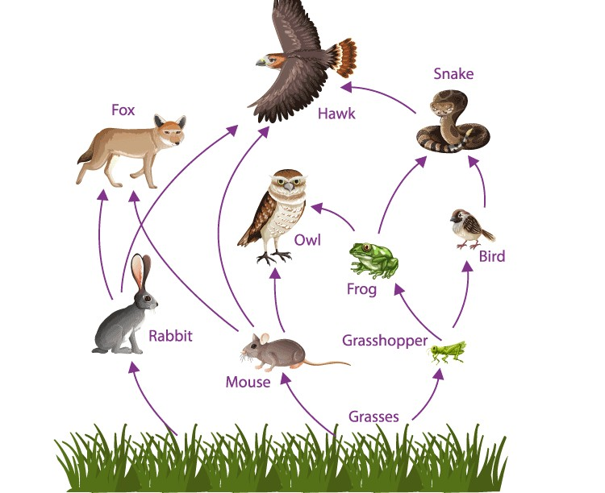

सभी जैविक (biotic) और अजैविक (abiotic) घटक तथा उनकी आपसी अंतःक्रिया मिलकर पारिस्थितिकी तंत्र (ecosystem) का निर्माण करते हैं। पारिस्थितिकी तंत्र के दो मुख्य घटक हैं
जैव निम्नीकरणीय - इन पदार्थों को अपघटकों (saprotrophs) और अन्य कारकों की क्रिया द्वारा तोड़ा जा सकता है, जैसे- कागज़, कपड़ा।
अजैव निम्नीकरणीय - इन पदार्थों को अपघटकों की क्रिया द्वारा तोड़ा नहीं जा सकता, जैसे- कांच, प्लास्टिक।
जिन पदार्थों को सूक्ष्मजीवों की क्रिया द्वारा विघटित करके सरल पदार्थों में तोड़ा जा सकता है, उन्हें जैव निम्नीकरणीय कहते हैं और जिन पदार्थों पर सूक्ष्मजीव क्रिया नहीं कर पाते तथा जो सरल पदार्थों में विघटित नहीं होते, उन्हें अजैव निम्नीकरणीय पदार्थ कहते हैं।
जैव निम्नीकरणीय पदार्थ पर्यावरण को जिन दो तरीकों से प्रभावित करते हैं वे हैं
यदि हमारे द्वारा उत्पन्न किया गया सारा अपशिष्ट जैव निम्नीकरणीय है और इसका प्रबंधन इस प्रकार किया जाए कि वह अपघटित होने दिया जाए, तो इसका पर्यावरण पर कोई प्रभाव नहीं पड़ेगा।
अपशिष्ट निपटान की समस्या को कम करने के लिए हम यह कर सकते हैं:
जैव निम्नीकरणीय प्रदूषक | अजैव निम्नीकरणीय प्रदूषक |
|---|
1. इन प्रदूषकों को जीवाणु और कवक जैसे प्राकृतिक जीवों द्वारा विघटित किया जा सकता है। | 1. इन प्रदूषकों को प्राकृतिक जीवों द्वारा विघटित नहीं किया जा सकता और ये पर्यावरण में लंबे समय तक बने रहते हैं। |
|---|
2. ये पर्यावरण में जमा नहीं होते। | 2. ये पर्यावरण में जमा होते हैं और दीर्घकालिक प्रदूषण का कारण बनते हैं। |
|---|
उदाहरण: सब्ज़ी का कचरा, कागज़, कपास। | उदाहरण: प्लास्टिक, कांच, धातु, डी.डी.टी. (DDT)। |
|---|
प्रकाश संश्लेषण (photosynthesis) द्वारा भोजन बनाने वाले हरे पौधे और शैवाल उत्पादक कहलाते हैं।
उदाहरण - वृक्ष, घास, फूल और खरपतवार।
उपभोक्ता वह जीव है जो स्वयं अपना भोजन नहीं बना सकता और भोजन तथा ऊर्जा के लिए अन्य जीवों (पौधों या जंतुओं) पर निर्भर रहता है। उपभोक्ताओं में जंतु, मनुष्य, कीट आदि शामिल हैं।
उदाहरण: गाय, शेर, मनुष्य, हिरण।
जो जंतु पौधों और अन्य जंतुओं दोनों को अपने भोजन के रूप में खाते हैं, उन्हें सर्वाहारी जंतु कहते हैं। उदाहरण - मनुष्य, कुत्ता आदि।
मृत पौधों और जंतुओं के शरीर में उपस्थित जटिल कार्बनिक पदार्थों को सरल अकार्बनिक पदार्थों में विघटित करने वाले सूक्ष्मजीवों को अपघटक कहते हैं, जैसे- जीवाणु, कवक।
2021 अपघटक, पौधों और जंतुओं के मृत शरीर जैसे जटिल कार्बनिक पदार्थों को विघटित करके उन्हें सरल अकार्बनिक पदार्थों में बदल देते हैं।
जिस शरीर पर अपघटक क्रिया करते हैं, उसमें उपस्थित सभी तत्व वापस प्रकृति में मुक्त हो जाते हैं। अपघटक प्रकृति में संतुलन बनाए रखते हैं और पर्यावरण में महत्वपूर्ण भूमिका निभाते हैं।
खाद्य श्रृंखला एक क्रम है जो दर्शाता है कि पारिस्थितिकी तंत्र में ऊर्जा और पोषक तत्व एक जीव से दूसरे जीव में किस प्रकार स्थानांतरित होते हैं। खाद्य श्रृंखला में प्रत्येक जीव अपने से पहले वाले जीव को खाता है और अगले जीव के लिए भोजन बन जाता है।
उदाहरण:
घास → टिड्डा → मेंढक → सांप → चील
किसी एक पारिस्थितिकी तंत्र की खाद्य श्रृंखला के विभिन्न पोषी स्तर के जीवों के केवल नाम लिखिए।
(2023) खाद्य श्रृंखला में विभिन्न स्तर या चरण, जिन पर भोजन का स्थानांतरण होता है, पोषी स्तर कहलाते हैं।
उदाहरण खाद्य श्रृंखला।
घास → टिड्डा → मेंढक → सांप → चील
किसी पोषी स्तर के सभी जीवों को हटाने का प्रभाव समान होगा।
यदि किसी भी पोषी स्तर के जीवों को हटा दिया जाए तो इससे निश्चित रूप से पूरे पारिस्थितिकी तंत्र को नुकसान पहुंचेगा।
उदाहरण के लिए, घास टिड्डा मेंढक सांप मोर - इसमें यदि सभी टिड्डे मार दिए जाएं/हटा दिए जाएं तो मेंढक संघर्ष करेंगे और घास बहुतायत में उग जाएगी।
यदि सांपों को हटा दिया जाए तो मेंढकों की संख्या बढ़ जाएगी, जिससे भी असंतुलन उत्पन्न होगा।
यदि किसी एक पोषी स्तर के सभी जीवों को मार दिया जाए तो अगले पोषी स्तर के वे सभी जीव जो इन पर निर्भर हैं, मर जाएंगे। अगले पोषी स्तरों को खाने के लिए भोजन नहीं मिलेगा और पूरी खाद्य श्रृंखला अस्त-व्यस्त हो जाएगी। साथ ही, निचले पोषी स्तर के जीव अत्यधिक प्रजनन करेंगे और उनकी जनसंख्या बहुतायत में बढ़ जाएगी, जिससे पारिस्थितिकी तंत्र असंतुलित हो जाएगा।
खाद्य जाल किसी पारिस्थितिकी तंत्र में परस्पर जुड़ी हुई खाद्य श्रृंखलाओं का एक प्राकृतिक जाल है। यह दर्शाता है कि विभिन्न जीव कई भोजन-संबंधों के माध्यम से किस प्रकार जुड़े होते हैं। यदि एक खाद्य श्रृंखला बाधित होती है, तो भी अन्य श्रृंखलाएँ पारिस्थितिकी तंत्र को सहारा दे सकती हैं क्योंकि वे आपस में जुड़ी होती हैं।
उदाहरण:
घास → टिड्डा → मेंढक
घास → खरगोश → सांप
खाद्य जाल में ऐसी कई श्रृंखलाएँ आपस में जुड़ी होती हैं।

खाद्य श्रृंखला | खाद्य जाल |
|---|---|
1. खाद्य श्रृंखला किसी पारिस्थितिकी तंत्र में ऊर्जा प्रवाह का एक सीधा, एकल मार्ग दर्शाती है। | 1. खाद्य जाल किसी पारिस्थितिकी तंत्र में कई परस्पर जुड़ी खाद्य श्रृंखलाओं को दर्शाता है। |
2. यह सरल होता है और इसमें सीमित संख्या में जीव शामिल होते हैं। | 2. यह जटिल होता है और इसमें कई भोजन-संबंधों वाले अनेक जीव शामिल होते हैं। |
ग्रीनहाउस प्रभाव एक प्राकृतिक प्रक्रिया है जो पृथ्वी की सतह को गर्म करती है। जब सूर्य की ऊर्जा पृथ्वी के वायुमंडल तक पहुँचती है, तो उसका कुछ भाग वापस अंतरिक्ष में परावर्तित हो जाता है और शेष भाग को ग्रीनहाउस गैसें (कार्बन डाइऑक्साइड, जलवाष्प, मीथेन) अवशोषित करके पुनः विकिरित करती हैं। अवशोषित ऊर्जा वायुमंडल और पृथ्वी की सतह को गर्म करती है।
भूमंडलीय ऊष्मीकरण (ग्लोबल वार्मिंग) - कई मानवीय गतिविधियों तथा कुछ प्राकृतिक गतिविधियों के कारण गैसें उत्पन्न होती हैं। इनमें ग्रीनहाउस गैसें भी शामिल हैं। ये सभी गैसें वायुमंडल में जमा होकर एक विशाल परत बना लेती हैं, जो पृथ्वी की गर्मी को वायुमंडल से बाहर नहीं निकलने देती। इससे पृथ्वी का तापमान बढ़ जाता है, जिसे भूमंडलीय ऊष्मीकरण (ग्लोबल वार्मिंग) कहा जाता है।
भूमंडलीय ऊष्मीकरण के दो कारण हैं -
व्याख्या करें - (a) सीसा (Lead), (b) क्लोरोफ्लोरो कार्बन (Chlorofluoro carbon)।
इसके प्रभाव - पेट दर्द, उच्च रक्तचाप, मानसिक असंतुलन आदि।
इसके प्रभाव - ओजोन परत का क्षरण, गंभीर नेत्र समस्याएँ, प्रतिरक्षा क्षमता में कमी।
ओजोन ऑक्सीजन के 3 परमाणुओं वाला एक अणु है, इसका सूत्र O₃ है। पराबैंगनी (ultraviolet) विकिरण ऑक्सीजन को मुक्त ऑक्सीजन परमाणुओं में विभाजित करता है, ये परमाणु ऑक्सीजन के अणुओं के साथ मिलकर ओजोन बनाते हैं।
O2 –(UVrays)→ O + O O2 + O –(UVrays)→ O₃ पारिस्थितिकी तंत्र में ओजोन - भूतल स्तर पर ओजोन विषैली होती है, लेकिन ऊपरी स्तर पर यह अत्यंत उपयोगी है क्योंकि यह सभी जीवों को सूर्य की हानिकारक पराबैंगनी विकिरणों से बचाती है। यह पराबैंगनी विकिरणों को पृथ्वी की सतह पर प्रवेश नहीं करने देती। पराबैंगनी विकिरणों का आयनकारी (ionising) प्रभाव मनुष्यों में त्वचा कैंसर का कारण बनता है।
ओजोन परत का संरक्षण क्यों आवश्यक है?
समताप मंडल (stratosphere) में स्थित ओजोन परत हानिकारक पराबैंगनी किरणों से बचाव में अत्यंत सहायक है। ओजोन परत के अभाव में जीवों को भारी क्षति हो सकती है। इससे त्वचा कैंसर, मोतियाबिंद (cataract), फसल उत्पादन में कमी जैसी बीमारियाँ हो सकती हैं।
इस क्षति को सीमित करने के लिए?
यह क्षति यूएनईपी (संयुक्त राष्ट्र पर्यावरण कार्यक्रम - UNEP) द्वारा सीमित की जा रही है, जिसने 1986 में सीएफसी (CFC) उत्पादन को स्थिर (freeze) करने के लिए एक समझौता किया है।
CFC - क्लोरोफ्लोरोकार्बन, जिसका उपयोग प्रशीतक (refrigerants) के रूप में और अग्निशामकों (fire extinguishers) में किया जाता है।
अम्लीय वर्षा वह वर्षा जल है जो उसमें घुली हानिकारक गैसों की उपस्थिति के कारण अम्लीय हो जाता है।
यह तब होता है जब कारखानों, वाहनों और बिजली संयंत्रों से निकलने वाली गैसें जैसे सल्फर डाइऑक्साइड (SO₂) और नाइट्रोजन ऑक्साइड (NOₓ) वायुमंडल की नमी के साथ मिलकर सल्फ्यूरिक अम्ल (H₂SO₄) और नाइट्रिक अम्ल (HNO₃) बनाती हैं।
ये अम्ल वर्षा जल में घुल जाते हैं और अम्लीय वर्षा के रूप में पृथ्वी पर गिरते हैं।